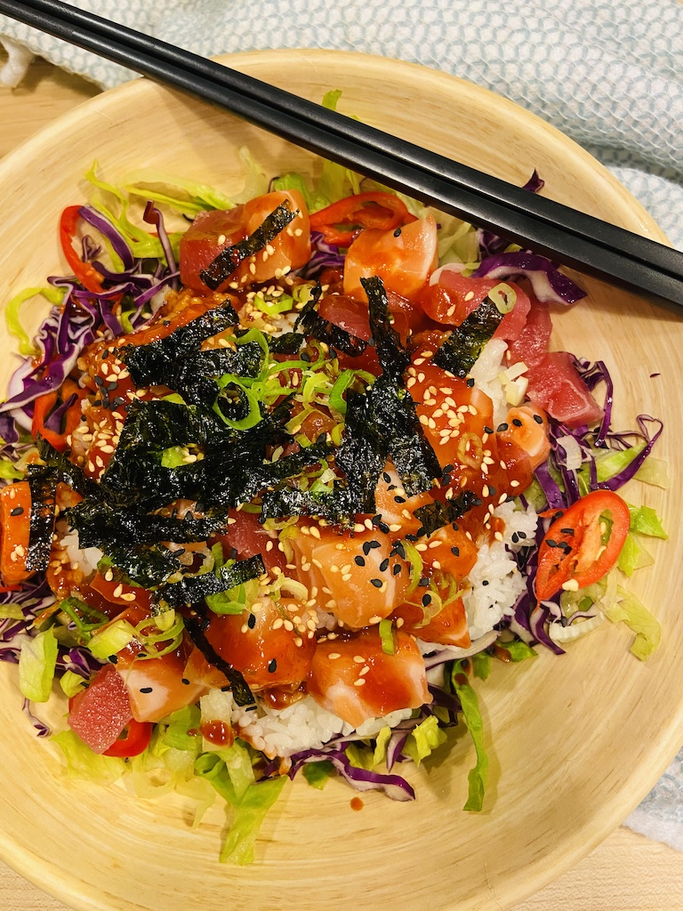
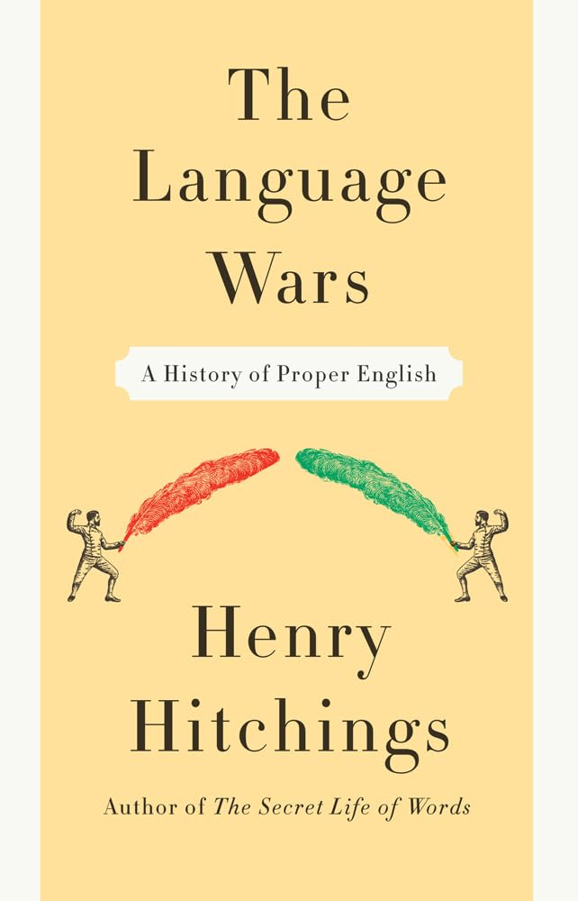
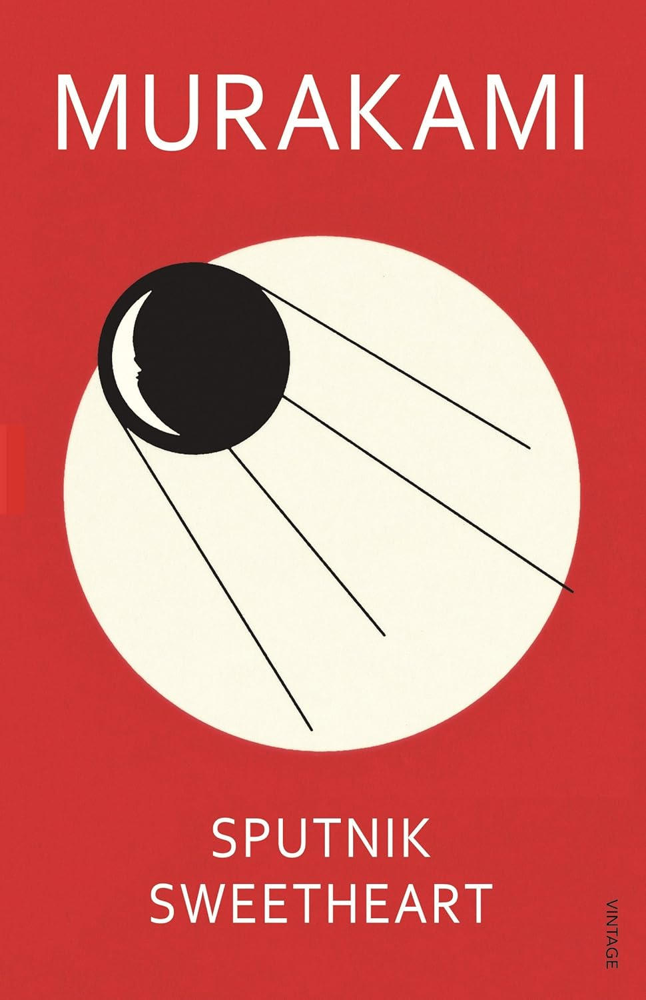
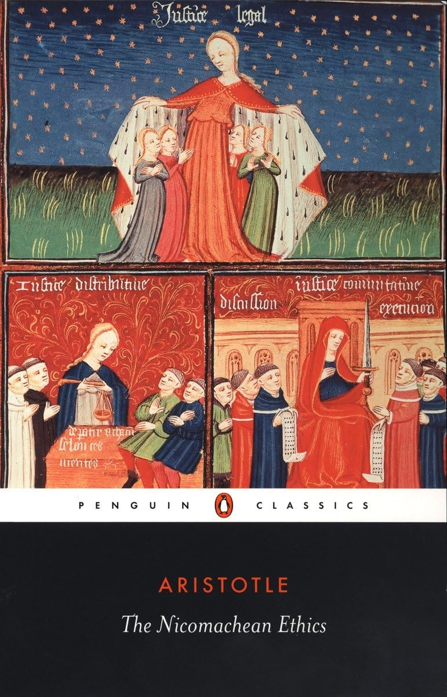

I visited Korea and Japan with my mom and brother in 2019. We were able to see how Korea has changed in the years since my mom last visited as well as see family relatives; I was also able to practice some of my Korean again yet see how much more I would need to improve to hold a conversation on my own. In Japan, we visited my aunt on my dad's side as well as see my cousin, his wife, and his three-year-old son. Overall it was a pleasant trip despite the potential monsoon in the region at the time.
One of my favorite restaurants in my hometown of Houston, Texas is Korea Garden . The portions are good and the food remains authentic to the Korean palate, even according to my grandmother. In addition, the service is good and the staff seem genuinely interested in delivering a quality experience for families dining out.
One of my favorite food dishes is a Korean dish called 회덮밥 or romanized as hwe-dup-bap. This dish is a raw fish dish with rice and vegetables, with strong similarities to the Japanese chirashi-don; however this Korean dish uses gochujang, an essential mother sauce made from fermented red chillies. Given that one of the key ingredients is raw fish which is served cold as well as there is no need for heat preparation, this is associated as a summer dish.
| Book | Image | Author | Summary |
|---|---|---|---|
| Meditations |
|
Marcus Aurelius | Meditations is a collection of personal reflections of Stoic philosophy, teaching the importance of virtue, self-discipline, and resilience throughout the challenges of life. |
| The Language Wars |  | Henry Hitchings | The Language Wars explores the history and debates surrounding the English language, with focus on linguistic evoluation and consequent adapatation of grammar and usage. |
| Sputnik Sweetheart |  | Haruki Murakami | Sputnik Sweetheart is a Murakami novel with typical themes of love, loneliness, and identity with story revolving around the disappearance of a young woman and the ripple effects on a friend haunted by her absence and his unrequited love. |
| The Nicomachean Ethics |  | Aristotle | Nicomachean Ethics explores how virtuous activity, when guided by reason, leads to human happiness. |